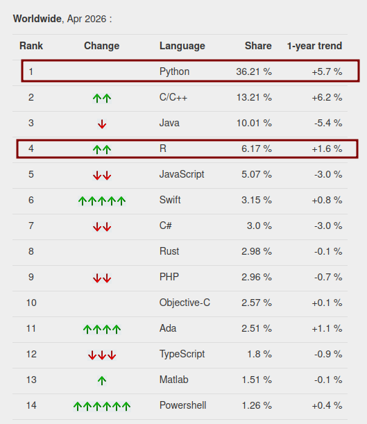

Utilizando pacotes Python no R com o Reticulate
2026-04-25

The PYPL PopularitY of Programming Language Index is created by analyzing how often language tutorials are searched on Google.
Terminologia de Chambers. “Extending R”, 2016
object.method(arg1, arg2).generic(object, arg2, arg3)Apud (Wickham 2019, 287)
Nativos:
- S3 (1992)
- S4 (1998)
- RC (Reference Class)
Pacotes adicionais:
- R.oo [Bengtsson, 2003]
- proto [Grothendieck et al., 2016]
- R6 [Winston Chang, 2017]
- S7, S7 website 2022;
ver (Wickham 2015)
Funcional:
S3 S4 S7
Encapsulada:
RC
Modo 1
| R | Python | Examples |
|---|---|---|
| Single-element vector | Scalar | 1, 1L, TRUE, "foo" |
| Multi-element vector | List | c(1.0, 2.0, 3.0), c(1L, 2L, 3L) |
| List of multiple types | Tuple | list(1L, TRUE, "foo") |
| Named list | Dict | list(a = 1L, b = 2.0), dict(x = x_data) |
| Matrix/Array | NumPy ndarray | matrix(c(1,2,3,4), nrow = 2, ncol = 2) |
| Data Frame | Pandas DataFrame | data.frame(x = c(1,2,3), y = c("a", "b", "c")) |
| Function | Python function | function(x) x + 1 |
| Raw | Python bytearray | as.raw(c(1:10)) |
| NULL, TRUE, FALSE | None, True, False | NULL, TRUE, FALSE |
Fonte: https://pkgs.rstudio.com/reticulate/articles/calling_python.html
Python
i col1 col2
0 1 a 11
1 2 b 12
2 3 c 13
3 4 d 14
4 5 e 15
5 6 f 16
6 7 g 17
7 8 h 18
8 9 i 19
9 10 j 200 a
1 b
2 c
3 d
4 e
Name: col1, dtype: strR Base
i col1 col2
1 1 a 11
2 2 b 12
3 3 c 13
4 4 d 14
5 5 e 15
6 6 f 16
7 7 g 17
8 8 h 18
9 9 i 19
10 10 j 20
11 11 k 21
12 12 l 22
13 13 m 23
14 14 n 24
15 15 o 25
16 16 p 26
17 17 q 27
18 18 r 28
19 19 s 29
20 20 t 30
21 21 u 31
22 22 v 32
23 23 w 33
24 24 x 34
25 25 y 35
26 26 z 36
27 27 <NA> 37
28 28 <NA> 38
29 29 <NA> 39
30 30 <NA> 40[1] "a" "b" "c" "d" "e"R - tidyverse
# A tibble: 30 × 3
i col1 col2
<int> <chr> <dbl>
1 1 a 11
2 2 b 12
3 3 c 13
4 4 d 14
5 5 e 15
6 6 f 16
7 7 g 17
8 8 h 18
9 9 i 19
10 10 j 20
# ℹ 20 more rows# A tibble: 5 × 1
col1
<chr>
1 a
2 b
3 c
4 d
5 e R
Python
https://docs.python.org/3/library/pickle.html
FlISoL 2026 - “Python versus R? Python no R!” - Alisson Soares